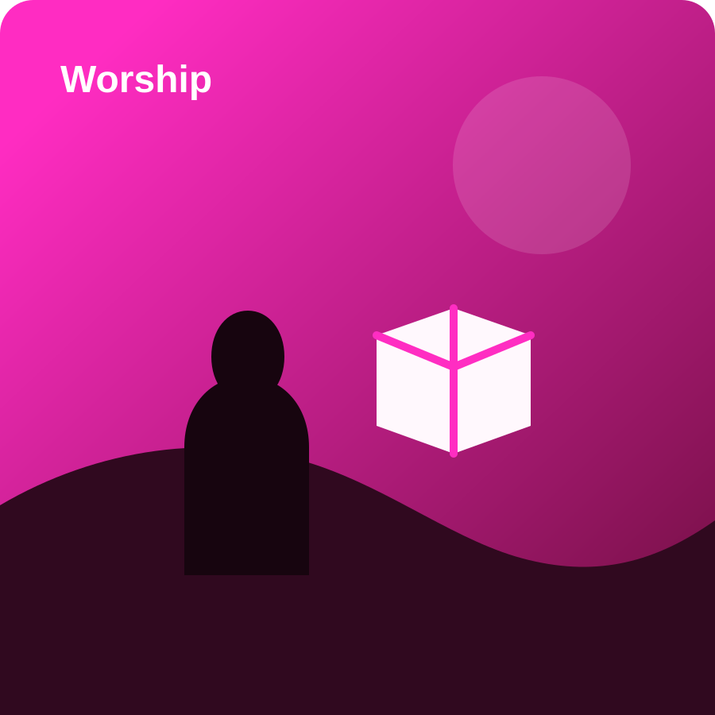
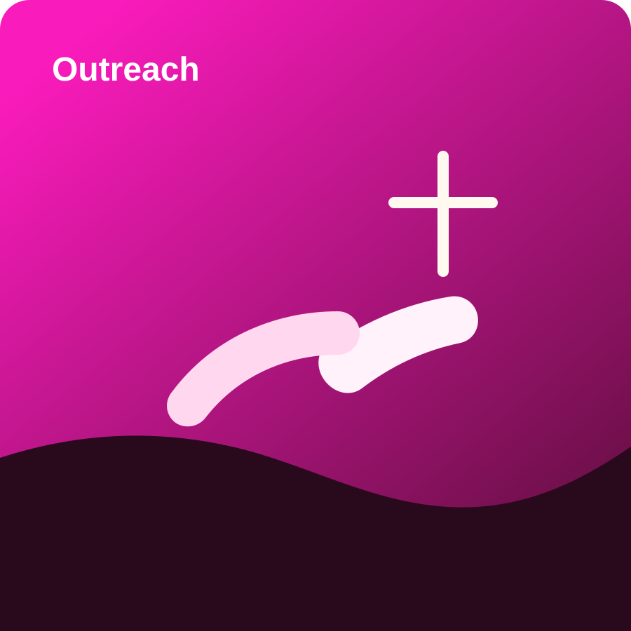

Bible Study
Careful, Christ-centered study sessions that help members understand Scripture with clarity and conviction.

Adventist Community
Spiritual Buddies Ministry is a group of Adventist believers established purposely to learn the Word of God and collaborate in different social issues.

Prayer & Fellowship
From Sabbath fellowship to heartfelt prayer sessions, we create spaces where believers can be encouraged, restored, and sent out with hope.

Service & Outreach
We believe Bible truth should shape daily life, compassionate service, and practical care for the people and communities around us.
Welcome
Spiritual Buddies Ministry exists to help believers grow in biblical truth and reflect the heart of Christ in everyday life. Our gatherings are designed to be spiritually nourishing, biblically grounded, and warmly welcoming for young people, families, and friends of the faith.
Whether you are seeking deeper understanding, prayer support, or a place to serve, this ministry offers room to learn, belong, and walk faithfully with others.
Careful, Christ-centered study sessions that help members understand Scripture with clarity and conviction.
Intentional moments of worship, intercession, and spiritual encouragement for personal and shared growth.
Practical involvement in social issues through support, presence, and compassionate ministry.
Theme Verse
“Sanctify them through thy truth: thy word is truth.”
John 17:17
Ministry Focus
Warm Sabbath-centered gatherings built around worship, reflection, and unity in Christ.
Spiritually meaningful spaces for young believers to grow, ask questions, and build godly friendships.
Sharing biblical hope through teaching, conversation, prayer, and digital ministry outreach.
Lifting one another before God through intentional prayer, care, and pastoral sensitivity.
Upcoming Gatherings
Every Friday
Prepare hearts for Sabbath through Scripture, worship, and focused intercession.
Every Sabbath
A ministry rhythm of study, discussion, and encouragement for all who want to grow in faith.
Monthly
Serving others with practical love and visible compassion in response to social needs.
Gallery


Join The Journey